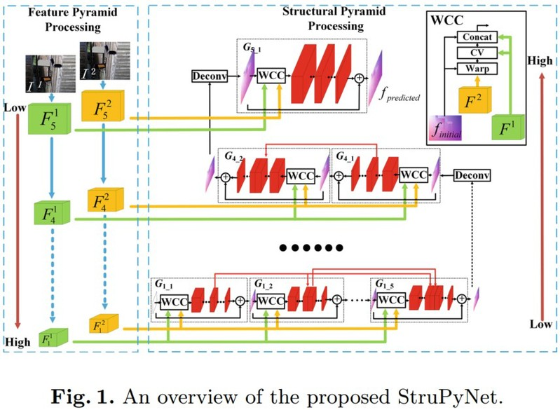
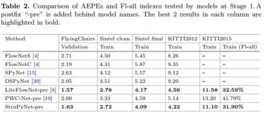
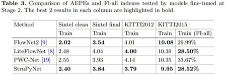
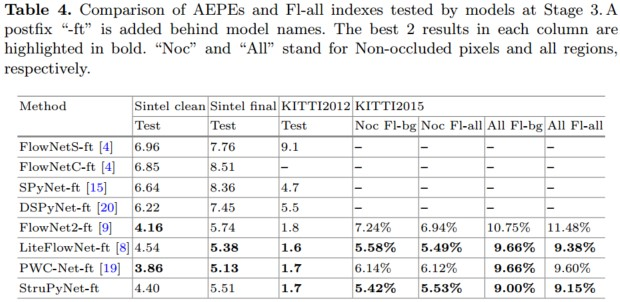
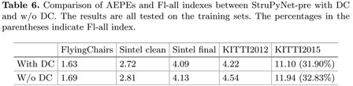

Structural Pyramid Network for Cascaded Optical Flow Estimation
Zefeng Sun , Hanli Wang , Yun Yi and Qinyu Li
Overview:
To achieve a better balance of accuracy and computational complexity for optical flow estimation, a Structural Pyramid Network (StruPyNet) is designed to combine structural pyramid processing and feature pyramid processing. In order to efficiently distribute parameters and computations among all structural pyramid levels, the proposed StruPyNet flexibly cascades more small flow estimators at lower structural pyramid levels and less small flow estimators at higher structural pyramid levels. The more focus on low-resolution feature matching facilitates large-motion flow estimation and background flow estimation. In addition, residual flow learning, feature warping and cost volume construction are repeatedly performed by the cascaded small flow estimators, which benefits training and estimation. As compared with state-of-the-art convolutional neural network-based methods, StruPyNet achieves better performances in most cases. The model size of StruPyNet is 95.9% smaller than FlowNet2, and StruPyNet runs at 3 more frames per second than FlowNet2. Moreover, the experimental results on several benchmark datasets demonstrate the effectiveness of StruPyNet, especially StruPyNet performs quite well for large-motion estimation.
Method:
A Structural Pyramid Network (StruPyNet) is designed, which consists of feature pyramid processing and structural pyramid processing as shown in Fig. 1. The feature pyramid is an inverted pyramid which has 5 levels to extract multi-scale feature pairs in a bottom-up manner, and the structural pyramid also has 5 levels to estimate multi-resolution flows. For an efficient distribution of parameters and computations among all the structural pyramid levels, the numbers of cascaded small flow estimators are respectively 5, 4, 3, 2 and 1 from the bottom level to the top level in the structural pyramid. Each structural pyramid level is connected to its adjacent structural pyramid level with a de-convolutional layer for upsampling and transporting flow fields. Benefiting from the structural pyramid, StruPyNet pays more efforts on extracting correlation from low-resolution feature pairs that contain rich global structure information, which enhances the capability for large-motion flow estimation and background flow estimation. Moreover, residual flow learning, feature warping and cost volume construction are performed for 15 times by 15 cascaded small flow estimators to better extract correlation and refine sub-pixels. The proposed StruPyNet outperforms other state-of-the-art CNN-based methods such as FlowNet2, LiteFlowNet and PWC-Net on the KITTI datasets, and achieves competitive results on the Sintel dataset. Moreover, the model size of StruPyNet is less than that of FlowNet2 and PWC-Net.

Network Architecture:
The detailed CNN architecture of the small flow estimator is shown in Table 1.

Results:
To achieve optimal generalization performances, there are three training stages. At Stage 1, the models are trained on the FlyingChairs dataset and then fine-tuned on the Things3D dataset at Stage 2. At Stage 3, the models are further fine-tuned on the corresponding Sintel and KITTI datasets. The proposed StruPyNet is evaluated on several public benchmarks at 3 stages respectively, and the results at each stage are compared with baseline methods. In experiments, besides AEPE, two other popular employed metrics are also presented, including Fl-all (the percentage of flow outliers averaged over all regions) and Fl-bg (the percentage of flow outliers averaged over background regions). The results of Stage 1, 2, 3 are respectively shown in Table 2,3,4.



A new learning rate schedule Snew_fine is explored for fine-tuning on the Things3D dataset. The comparison between Sfine and Snew_fine is shown in Fig. 2.

The use of Sfine can't get the AEPE loss reduced, and unexpected over-fitting even appears after 150K iterations. However, the proposed Snew_fine makes the AEPE loss decrease to a low level with only 60K iterations. Table 5 shows the comparison of results tested on all the training sets using models fine-tuned on the Things3D dataset with Sfine and Snew_fine respectively.

Intra-pyramid-level and inter-flow-estimator Dense Connections (DC) improve flow estimation accuracy and the representation power of the proposed StruPyNet. To verify the effectiveness, StruPyNet is trained with intra-pyramid-level and inter-flow-estimator dense connections (i.e., with DC) and without intra-pyramid-level and inter-flow-estimator dense connections (i.e., w/o DC) separately on the FlyingChairs dataset, with the results shown in Table 6.

The comparison of model size is shown in Fig. 3, where it can be observed that the proposed StruPyNet is 23.2% smaller than PWC-Net and has around 24 times fewer parameters than FlowNet2. Furthermore, the run time of the competing models is tested with the same testing configuration: 1024 x 448 image pairs as input on a Titan-X GPU. Moreover, the proposed StruPyNet is faster than FlowNet2 which runs at 10 fps.

Source Code:
原站插图：图片暂留白StruPyNet_V1.0.zip
Citation:
Please cite the following papers if you use this code.
Zefeng Sun, Hanli Wang, Yun Yi, and Qinyu Li, Structural Pyramid Network for Cascaded Optical Flow Estimation, The 26th International Conference on Multimedia Modeling (MMM’20), LNCS 11961, Daejeon, Korea, pp. 455-467, Jan. 5-8, 2020.